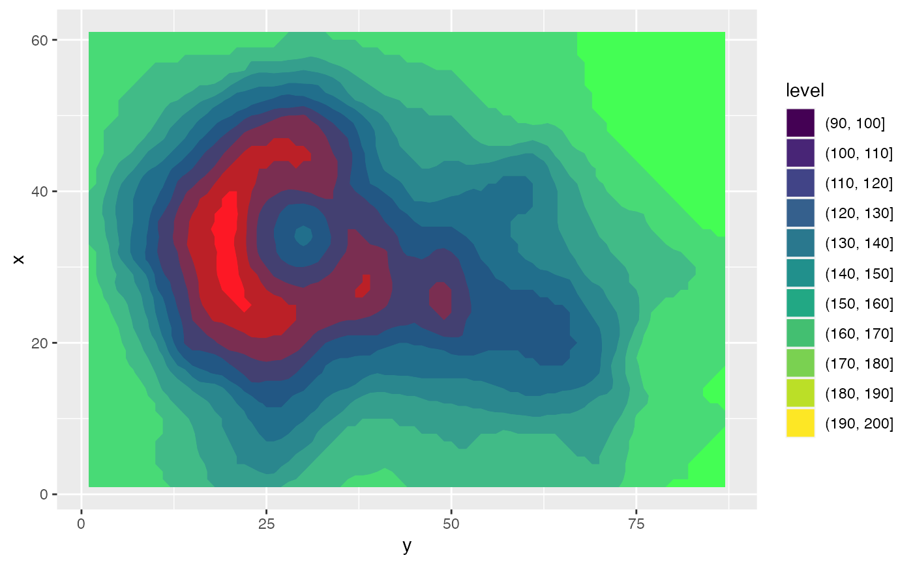

Some effects uses a particular channel for specific parameters, such as
with_displacement(), which grabs the relative x and y displacements from
different channels in some other layer. To facilitate specifying which
channel to use from a layer (which is always multichannel), you can wrap the
specification in a channel specifier given below. If a filter requires a
specific channel and none is specified it will default to luminance (based
on the hcl colour space)
ch_red(x, colourspace = "sRGB", invert = FALSE) ch_green(x, colourspace = "sRGB", invert = FALSE) ch_blue(x, colourspace = "sRGB", invert = FALSE) ch_alpha(x, colourspace = "sRGB", invert = FALSE) ch_hue(x, colourspace = "HCL", invert = FALSE) ch_chroma(x, colourspace = "HCL", invert = FALSE) ch_luminance(x, colourspace = "HCL", invert = FALSE) ch_saturation(x, colourspace = "HSL", invert = FALSE) ch_lightness(x, colourspace = "HSL", invert = FALSE) ch_cyan(x, colourspace = "CMYK", invert = FALSE) ch_magenta(x, colourspace = "CMYK", invert = FALSE) ch_yellow(x, colourspace = "CMYK", invert = FALSE) ch_black(x, colourspace = "CMYK", invert = FALSE) ch_key(x, colourspace = "CMYK", invert = FALSE) ch_custom(x, channel, colourspace, invert = FALSE)
| x | Any object interpretable as a layer |
|---|---|
| colourspace | The colourspace the channel should be extracted from. |
| invert | Should the channel values be inverted before use |
| channel | The name of a channel in the given colourspace |
x with a channel spec attached
library(ggplot2) volcano_long <- data.frame( x = as.vector(col(volcano)), y = as.vector(row(volcano)), z = as.vector(volcano) ) # invert the green channel ggplot(volcano_long, aes(y, x)) + as_reference( geom_contour_filled(aes(z = z, fill = after_stat(level))), id = 'contours' ) + as_colourspace( ch_red('contours'), ch_green('contours', invert = TRUE), ch_blue('contours') )